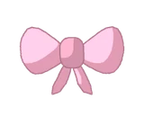
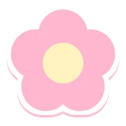
拍本命、拍娃娃的時候
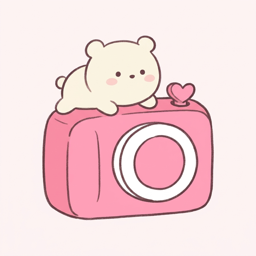
Oshi & Me和本命一起拍出可愛照片你也有這些煩惱嗎?
- 很在意
旁人的 眼光…… - 擔心
珍貴的 娃娃或 壓克力立牌 (亞克力立牌) 弄髒、 弄壞…… - 拍到了
旁邊的 路人…… - 不想
拍到 自己的臉， 但想 和本命 一起入鏡……
所以我做了
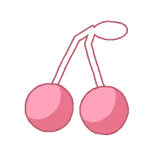
在家拍好的本命，一起出門追星!
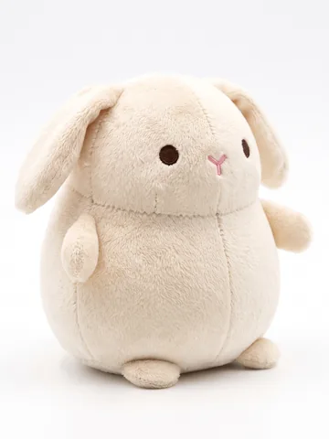
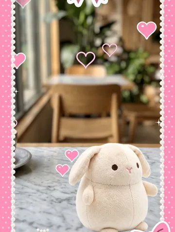
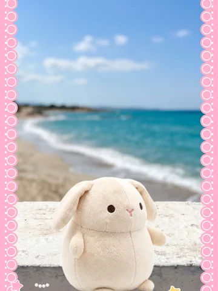
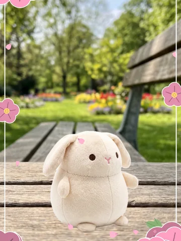
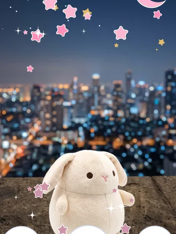
全部都是用同一張在家拍好的本命，在 App 裡召喚出來拍的範例。
在家慢慢拍出本命的好照片
用帥氣或可愛的角度拍下本命，再幫照片做裝飾、做專屬相框。
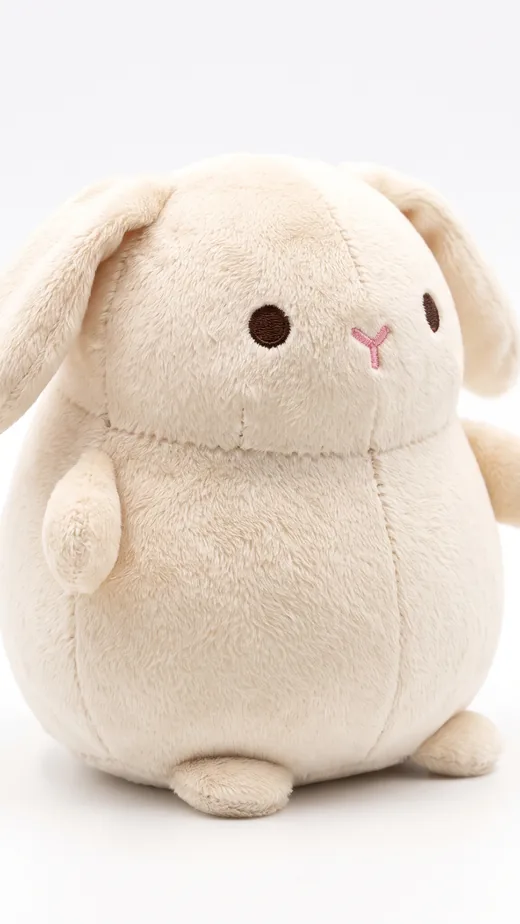
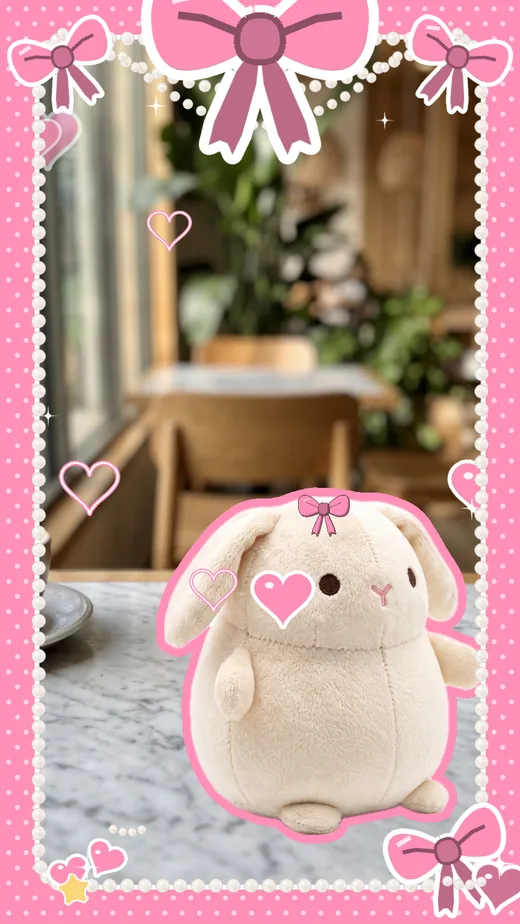
不怕旁人眼光，娃娃也不會弄髒、弄壞
帶著做好的本命照片出門追星!不必在意旁人的眼光，娃娃也不會弄髒或弄壞。當然，也可以把真正的娃娃帶出門，只用 App 拍照就好。
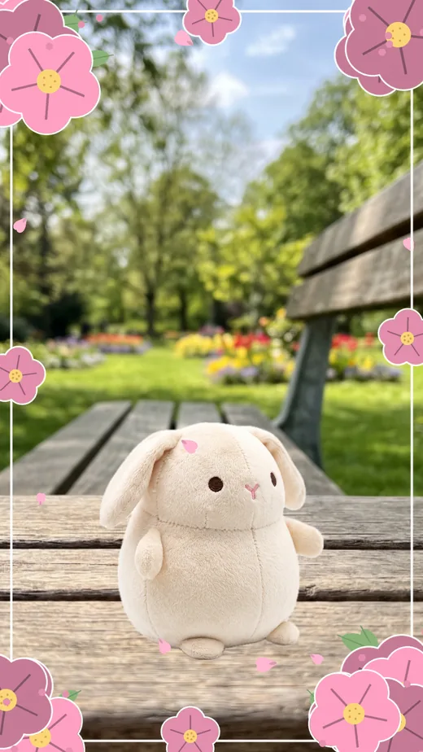
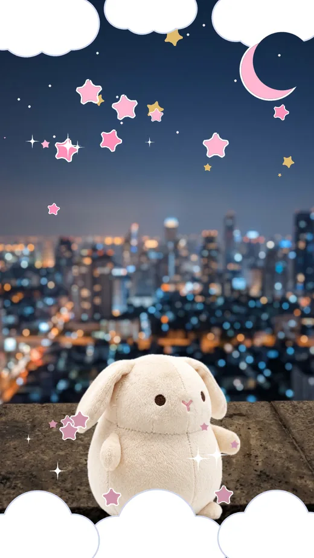
臉可以可愛地遮住
拍到路人時，可以用遮臉功能遮住。不想拍到自己的臉時，也能用貼紙可愛地遮起來。
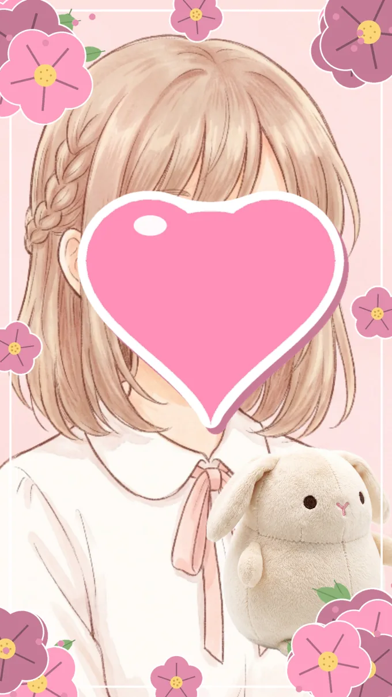
直接分享到社群平台
可以從 App 直接分享到 X、Instagram 等社群平台。
App 內購買與廣告
- 相框
- 自己做的相框最多 5 個。想做更多，可以加購 +5 個 或 大量相框(最多 100 個)。
- 裝飾
- 裝飾包買一次就能一直使用。換手機時可用「恢復購買」找回。
- 廣告
- 上鎖的貼紙，看影片廣告就能一個一個解鎖。儲存照片後有時會出現廣告，購買「移除廣告」就不會再出現。
常見問題
其他問題請到客服支援。
每次都要帶娃娃出門嗎?
不用。在家拍好並去背(摳圖)的本命會留在 App 裡。出門時就算娃娃不在身邊，也能召喚到鏡頭裡一起拍。
壓克力立牌或小卡也可以嗎?
可以。棉花娃娃、壓克力立牌、小卡、公仔、徽章等，都能沿著本命的形狀去背。
拍好的照片存在哪裡?
點「儲存到照片」就會存到 iPhone 的「照片」App。相機畫面和照片都不會傳到裝置外。